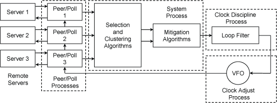

Last update: 10-Mar-2014 05:24 UTC
This page and its dependencies contain a technical description of the Network Time Protocol (NTP) architecture and operation. It is intended for administrators, operators and monitoring personnel. Additional information for nontechnical readers can be found in the white paper Executive Summary: Computer Network Time Synchronization. While this page and its dependencies are primarily concerned with NTP, additional information on related protocols can be found in the white papers IEEE 1588 Precision Time Protocol (PTP) and Time Synchronization for Space Data Links. Note that reference to a page in this document collection is to a page in the collection, while reference to a white paper is to a document at the Network Time Synchronization Research Project web site.
NTP time synchronization services are widely available in the public Internet. The public NTP subnet currently includes several thousand servers in most countries and on every continent of the globe, including Antarctica, and sometimes in space and on the sea floor. These servers support, directly or indirectly, a total population estimated at over 25 million computers in the global Internet.
The NTP subnet operates with a hierarchy of levels, where each level is assigned a number called the stratum. Stratum 1 (primary) servers at the lowest level are directly synchronized to national time services via satellite, radio or telephone modem. Stratum 2 (secondary) servers at the next higher level are synchronized to stratum 1 servers and so on. Normally, NTP clients and servers with a relatively small number of clients do not synchronize to public primary servers. There are several hundred public secondary servers operating at higher strata and are the preferred choice.
This page presents an overview of the NTP implementation included in this software distribution. We refer to this implementation as the reference implementation only because it was used to test and validate the NTPv4 specification RFC-5905. It is best read in conjunction with the briefings and white papers on the Network Time Synchronization Research Project page. An executive summary suitable for management and planning purposes is in the white paper Executive Summary: Computer Network Time Synchronization.
NTP clients and servers synchronize to the Coordinated Universal Time (UTC) timescale used by national laboratories and disseminated by radio, satellite and telephone modem. This is a global timescale independent of geographic position. There are no provisions to correct for local time zone or daylight savings time; however, these functions can be performed by the operating system on a per-user basis.
The UT1 timescale, upon which UTC is based, is determined by the rotation of the Earth about its axis. The Earth rotation is gradually slowing down relative to International Atomic Time (TAI). In order to rationalize UTC with respect to TAI, a leap second is inserted at intervals of about 18 months, as determined by the International Earth Rotation Service (IERS). Reckoning with leap seconds in the NTP timescale is described in the white paper The NTP Timescale and Leap Seconds.
The historic insertions are documented in the leap-seconds.list file, which can be downloaded from the NIST FTP servers. This file is updated at intervals not exceeding six months. Leap second warnings are disseminated by the national laboratories in the broadcast timecode format. These warnings are propagated from the NTP primary servers via other server to the clients by the NTP on-wire protocol. The leap second is implemented by the operating system kernel, as described in the white paper The NTP Timescale and Leap Seconds. Implementation details are described on the Leap Second Processing page.
Figure 1. NTP Data Formats
Figure 1 shows two NTP time formats, a 64-bit timestamp format and a 128-bit datestamp format. The datestamp format is used internally, while the timestamp format is used in packet headers exchanged between clients and servers. The timestamp format spans 136 years, called an era. The current era began on 1 January 1900, while the next one begins in 2036. Details on these formats and conversions between them are in the white paper The NTP Era and Era Numbering. However, the NTP protocol will synchronize correctly, regardless of era, as long as the system clock is set initially within 68 years of the correct time. Further discussion on this issue is in the white paper NTP Timestamp Calculations. Ordinarily, these formats are not seen by application programs, which convert these NTP formats to native Unix or Windows formats.

Figure 2. NTP Daemon Processes and Algorithms
The overall organization of the NTP architecture is shown in Figure 2. It is useful in this context to consider the implementation as both a client of upstream (lower stratum) servers and as a server for downstream (higher stratum) clients. It includes a pair of peer/poll processes for each reference clock or remote server used as a synchronization source. Packets are exchanged between the client and server using the on-wire protocol described in the white paper Analysis and Simulation of the NTP On-Wire Protocols. The protocol is resistant to lost, replayed or spoofed packets.
The poll process sends NTP packets at intervals ranging from 8 s to 36 hr. The intervals are managed as described on the Poll Process page to maximize accuracy while minimizing network load. The peer process receives NTP packets and performs the packet sanity tests described on the Event Messages and Status Words page and flash status word. The flash status word reports in addition the results of various access control and security checks described in the white paper NTP Security Analysis. A sophisticated traffic monitoring facility described on the Rate Management and the Kiss-o'-Death Packet page protects against denial-of-service (DoS) attacks.
Packets that fail one or more of these tests are summarily discarded. Otherwise, the peer process runs the on-wire protocol that uses four raw timestamps: the origin timestamp T1 upon departure of the client request, the receive timestamp T2 upon arrival at the server, the transmit timestamp T3 upon departure of the server reply, and the destination timestamp T4 upon arrival at the client. These timestamps, which are recorded by the rawstats option of the filegen command, are used to calculate the clock offset and roundtrip delay samples:
offset = [(T2 - T1) + (T3 - T4)] / 2,
delay = (T4 - T1) - (T3 - T2).
In this description the transmit timestamps T1 and T3 are softstamps measured by the inline code. Softstamps are subject to various queuing and processing delays. A more accurate measurement uses drivestamps, as described on the NTP Interleaved Modes page. These issues along with mathematical models are discussed in the white paper NTP Timestamp Calculations.
The offset and delay statistics for one or more peer processes are processed by a suite of mitigation algorithms. The algorithm described on the Clock Filter Algorithm page selects the offset and delay samples most likely to produce accurate results. Those servers that have passed the sanity tests are declared selectable. From the selectable population the statistics are used by the algorithm described on the Clock Select Algorithm page to determine a number of truechimers according to Byzantine agreement and correctness principles. From the truechimer population the algorithm described on the Clock Cluster Algorithm page determines a number of survivors on the basis of statistical clustering principles.
The algorithms described on the Mitigation Rules and the prefer Keyword page combine the survivor offsets, designate one of them as the system peer and produces the final offset used by the algorithm described on the Clock Discipline Algorithm page to adjust the system clock time and frequency. The clock offset and frequency, are recorded by the loopstats option of the filegen command. For additional details about these algorithms, see the Architecture Briefing on the Network Time Synchronization Research Project page. For additional information on statistacl principles and performance metrics, see the Performance Metrics page.